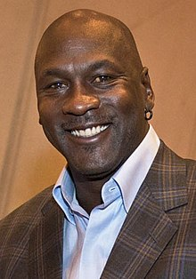

Content
- Series Overview
- Episodes
- Top Cast
Series Overview
The Last Dance is a 2020 American sports documentary miniseries co-produced by ESPN Films and Netflix. Directed by Jason Hehir, the series revolves around the career of Michael Jordan, with particular focus on his final season with the Chicago Bulls. The series features exclusive footage from a film crew that had an all-access pass to the Bulls, as well as interviews of many NBA personalities including Jordan, Scottie Pippen, Dennis Rodman, Steve Kerr, and Phil Jackson.
The series aired on ESPN from April 19 to May 17, 2020, in the United States, while its episodes were released on Netflix internationally the day after their US airings; beginning on May 23, two episodes were aired back-to-back on ESPN's corporate partner ABC. ESPN2 aired an alternate version of the series intended for family viewing, which removed most of the profanity heard in the episodes. It received critical acclaim, with praise for its directing and editing. It won the Primetime Emmy Award for Outstanding Documentary or Nonfiction Series at the 72nd Primetime Emmy Awards.
The series features both interviews and never-released footage from the 1997-98 Chicago Bulls season. Over 500 hours of all-access footage was filmed and used to create the 10 part documentary series. According to Adam Silver (now NBA Commissioner, but then the head of NBA Entertainment), Jordan allowed the filming with the agreement that the footage would only be used with his direct permission. After many years, and many refusals from Jordan, he agreed in 2016 to a documentary proposal from Mike Tollin.
ESPN and Netflix announced their joint production of the 10-part documentary series in May 2018, with the first official trailer being released on December 25, 2018. The release date was pushed back to June 2020 after another trailer was released in December 2019. However, because of the impact of the COVID-19 pandemic, ESPN published the final trailer on March 31, 2020 and expedited the premiere to April 19, 2020. The series became available on Netflix on July 19, 2020.
Episodes
| No. | Name | Running time | Original air date |
|---|---|---|---|
| 1 | "Episode I" | 50 minutes | April 19, 2020 |
| 2 | "Episode II" | 50 minutes | April 19, 2020 |
| 3 | "Episode III" | 48 minutes | April 26, 2020 |
| 4 | "Episode IV" | 50 minutes | April 26, 2020 |
| 5 | "Episode V" | 50 minutes | May 3, 2020 |
| 6 | "Episode VI" | 49 minutes | May 3, 2020 |
| 7 | "Episode VII" | 50 minutes | May 10, 2020 |
| 8 | "Episode VIII" | 50 minutes | May 10, 2020 |
| 9 | "Episode IX" | 49 minutes | May 17, 2020 |
| 10 | "Episode X" | 50 minutes | May 17, 2020 |
Top Cast
| Photo | Name | Role | Number of episodes |
|---|---|---|---|
|  | Michael Jordan | Self | 10 |
 |
Phil Jackson | Self - Bulls Head Coach 1989-1998 | 10 |
| Scottie Pippen | Self - Bulls Forward 1987-1998 | 9 | |
| David Aldridge | Self - ESPN Reporter 1996-2004 | 9 | |
 |
Steve Kerr | Self - Bulls Guard 1992-1998 | 9 |
Sources
IMDbWikipedia